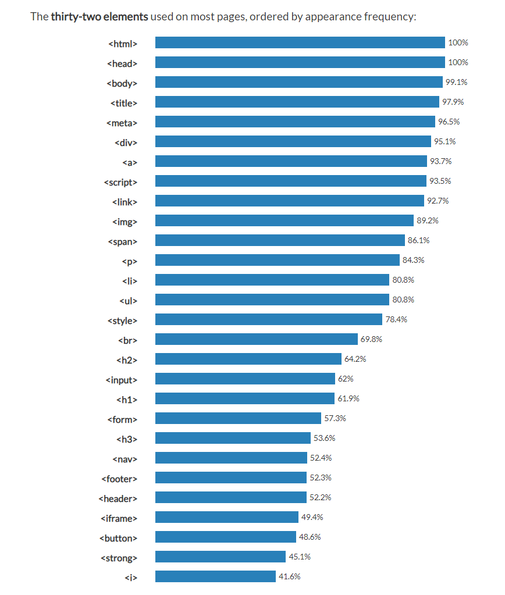

생활 코딩을 통해 기초적인 html 문법에 대해 공부했오! 그래서 오늘은 어제 공부한걸 정리해보고 개인적으로 궁금한 명령어들도 추가로 하나하나씩 넣어서 나만의 공부노트를 만들거야
html코딩을 위해서는 에디터(Editor)라는 프로그램이 필요하다. 각자의 운영체제에는 이미 에디터가 준비되어 있다.
웹사이트는 W3C라는 국제민각표준화기구의 소속 기관들의 논의를 통해 만들어진다. 여기서 미래에는 어떤 기능이 필요하고, 그 기능은 어떤 태그로 표현할 것인가를 의논한다. 이러한 것을 직관적으로 보여주는 예시는 웹사이트에서 [F12]버튼을 눌러 소스코드를 통해 볼 수 있다.
html에서 사용되는 명령어들은 이 사이트에서 사용 빈도를 표로 정리해준다. 즉, 이 사이트의 상위권에 속하는 명령어들은 대부분의 웹사이트에서 많이 사용된다.

여기서